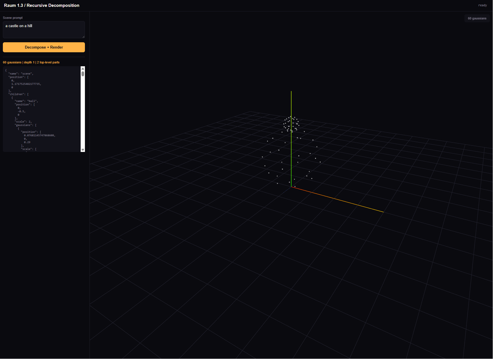
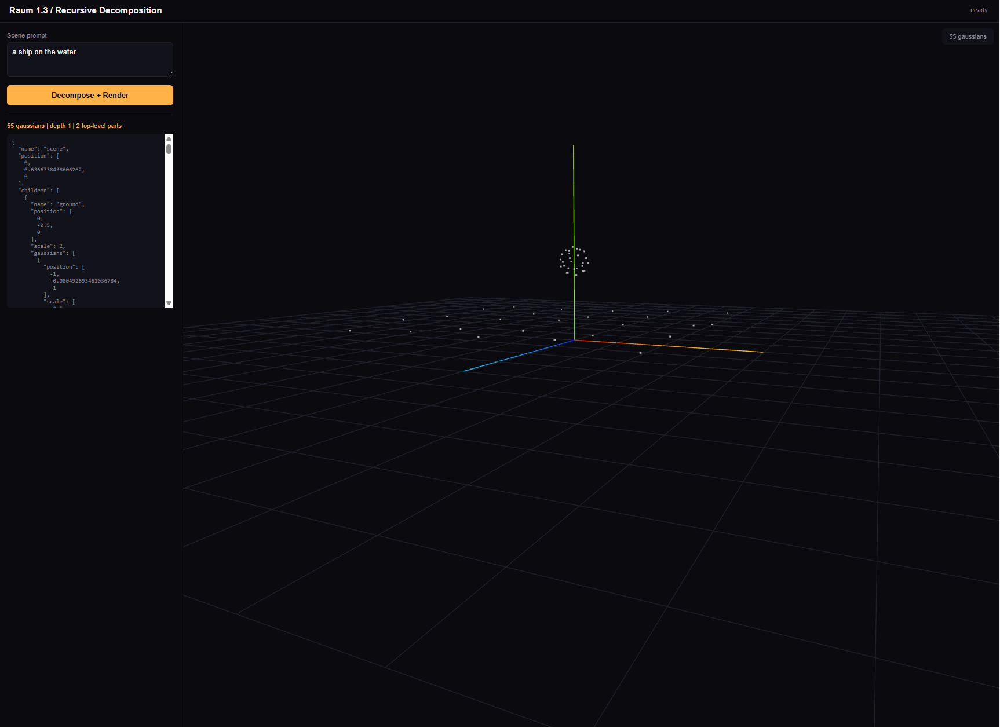
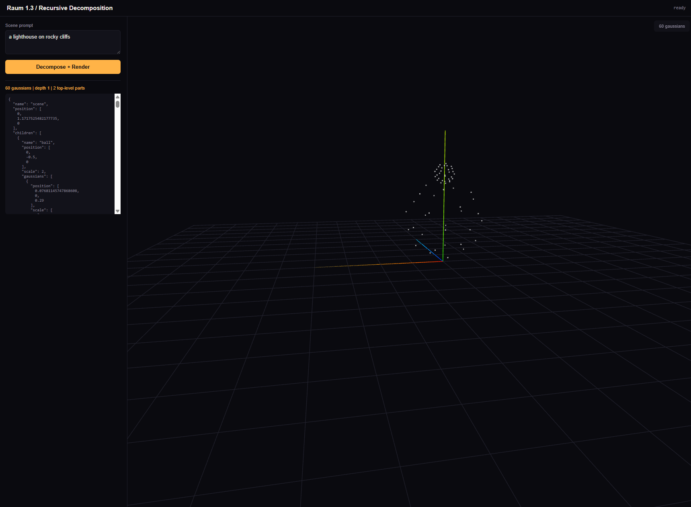
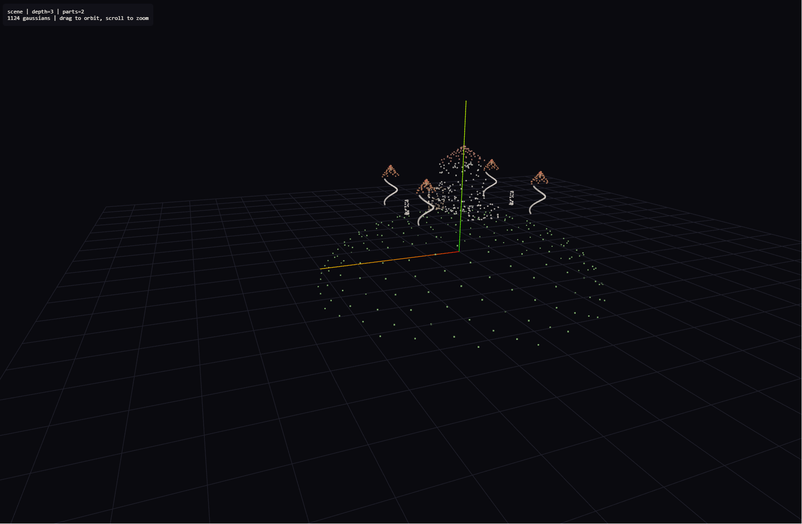
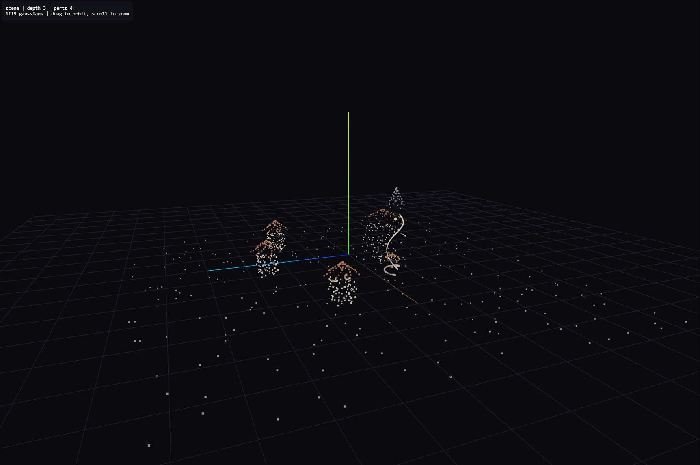
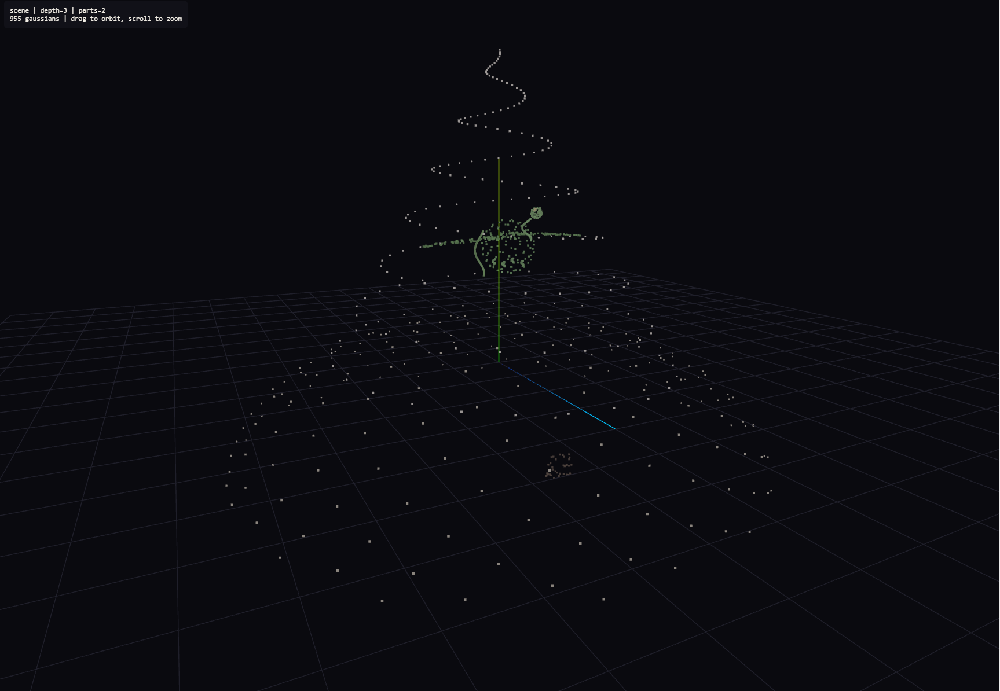

Recursive semantic-to-geometric decomposition via Gaussian splatting. A language model breaks prompts into composition trees, each leaf becomes a named, positioned Gaussian primitive, and the full scene renders in real time.
May 2026 / Pre-seed
Today's generative approaches predict pixels or radiance fields directly through diffusion. They do not produce structured, decomposed, editable scenes. None use compositional Gaussians. None produce labeled parts. None allow editing without full re-generation.
The gap in the market:
Input: prompt. Output: 10M unstructured floats (pixels, voxels, radiance values). No parts. No labels. No semantic structure. Edit: start over entirely.
Input: prompt. Output: a complete Gaussian space, renderable, physically accurate, decomposed into atomic blobs with names and a tree hierarchy. Edit: change one node, re-render in milliseconds.
No existing system delivers compositional structure, semantic labels, queryable parts, or editing without re-generation. We fill that gap using emerging Gaussian splatting technology.
A language model decomposes prompts into composition trees. Each node is a named sub-concept with spatial relations. Terminal nodes become individual Gaussian splats with semantic embeddings. The tree IS the editable representation.
Each blob carries its label and embedding. The scene graph is the representation. No separate mesh, no baking, no re-generation needed for edits.
SGS is the rendering formalism that unifies language understanding and 3D geometry under one equation. A single Gaussian primitive encodes both spatial structure and semantic meaning.
G = (mu, Sigma, alpha, f)
The same alpha-compositing rendering equation governs both language understanding (attention as transmittance-weighted feature aggregation) and 3D geometry (Gaussian splatting). This is not an analogy. It is a mathematical identity, proven in Lean 4 and submitted to JMLR.
C(x) = sum_i( T_i * alpha_i * f_i )
T_i = prod_j<i( 1 - alpha_j )
Where T_i is accumulated transmittance,
alpha_i is per-Gaussian opacity,
f_i is the feature vector (color, embedding, or both).
Softmax attention is a special case of this equation (proved). Any transformer layer can be expressed as alpha-compositing over Gaussians. This means SGS can represent anything a language model can, plus explicit 3D structure.
A blob is a pre-computed chunk of meaning stored as a Gaussian. One blob equals one passage, concept, or object compressed into a single primitive. Blobs bridge language memory and 3D scene composition.
This two-pass design lets the system recall prior scenes, reuse memorized components, and compose new structures from existing blobs without retraining.
The pipeline connects language decomposition to geometric rendering through four stages, each using the same alpha-compositing math.
The same mathematical operation (transmittance-weighted sum) appears at every stage. This is not a coincidence. It is why the system works: language decomposition and geometric rendering share a single formalism.
We prove that Gaussian alpha-compositing is a strict superset of softmax attention. Gaussian splatting can represent anything a transformer attention layer can, plus geometric structure. Formally verified in Lean 4, submitted to JMLR.
Prompts decompose into trees, trees into sub-trees, leaves into Gaussians. The hierarchy is the scene graph. Depth is configurable (2-5 levels tested). Each decomposition step is deterministic given the same seed.
Each conversational turn stores its context as Gaussian blobs. Retrieval uses cosine similarity over blob embeddings. 40% recall at 90-turn distance with zero fine-tuning. Flat cost per turn regardless of history length.
A declarative DSL describes scenes as labeled nodes with spatial relations. Users edit nodes by name, reposition, recolor, or swap geometry. Re-render is instantaneous because only affected blobs update.
When the decomposer encounters an unknown object class, it falls back to GloVe cosine nearest-neighbor lookup across the 300-class vocabulary. Every token maps to a renderable primitive, even for novel prompts outside training distribution.
End-to-end pipeline output from Planck 1.3 (100M params, structure-only generation). Text prompt enters the Decomposer LM, a composition tree is produced, Gaussians render in the browser with full hierarchy and labels.



Limited by 100M model context (512 tokens). Hertz (1B+) will produce richer trees with deeper hierarchy, more detailed sub-components, and better spatial reasoning.
These scenes demonstrate what the pipeline produces with a more capable decomposer. Hand-authored composition trees rendered through the same pipeline, representing the output quality expected from Hertz-scale (1B+) generation.



Hand-authored composition trees rendered through the same alpha-compositing pipeline. These demonstrate the target quality for Hertz-scale automated generation.
Unlike monolithic generation, SGS scenes are structured data. Every part has a name, a parent, a position, and an embedding. This enables applications that require understanding, not just appearance.
"Medieval village with a blacksmith" produces an editable scene with labeled buildings, props, and terrain. Designers drag to reposition. Swap components from a library. Export individual parts to game engines. Compose larger worlds from smaller authored scenes.
Building descriptions become 3D walkthroughs with editable floor plans. Change materials per room. Add or remove floors through language commands. Query spatial relationships ("which rooms face south?"). Integrate with BIM metadata.
Script descriptions become scene layouts. Directors iterate on composition, camera placement, and blocking before any modeling work begins. Each object is individually movable. Lighting can reference objects by name. Export to standard 3D formats for handoff.
"Show me a cell with the mitochondria highlighted" produces a labeled 3D model with queryable parts. Students can hide/show organelles, zoom into sub-structures, and ask spatial questions. Works for molecular biology, astronomy, anatomy, and physics simulations.
Combine blob-based memory with scene generation. "Remember the castle from yesterday, but make the towers taller." The system retrieves prior scene blobs, modifies the specified nodes, and renders the updated scene, all without re-generating from scratch.
Because every blob has a semantic label, scenes are inherently accessible. Screen readers can describe spatial relationships. AR/VR systems can attach interaction handlers to named parts. Spatial audio can reference scene nodes directly.
Full interactive roadmap visualizer: pm/index.html in the repository (reads roadmap.md and renders swimlanes).
We are building the decomposition layer between language models and 3D rendering. Every Gaussian has a name, a parent, and a position in a tree that mirrors how humans think about scenes.
Nikita Gorshkov, Founder
Senior PM, AI/ML infrastructure
Solo researcher, full-stack implementation
Pre-seed funding to scale the Decomposer LM (1B params), build API infrastructure, and hire a rendering engineer.